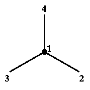
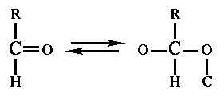
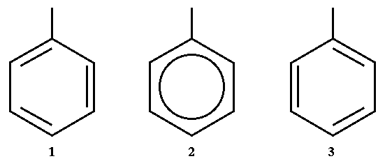

refmac version 5.0.* - macromolecular refinement program
There are two reasons for using chiral centres. Firstly they are used in refinement. Secondly they are important when new coordinates are created from the chemical description.
Use in the refinement and new coordinate creation are different although similar. As restraints they are useful at low resolution and at the early stages of refinement when coordinates are poor. If all four atoms surrounding a chiral centre have been given, or at high resolution and at the end stages of the refinement, the use of chiral volume as a restraint may be abandoned.
In refmac it can be switched off using:
CHIR 0.0Then REFMAC will print out information about chiral volumes but they will not be used in restraints (i.e. chirality restraints will have weight 0).
Another important use of chiral centres is for coordinate creation. In this case proper chiral volumes and their signs should be used. They are important in deciding which stereoisomer should be created.
Chiral centres are usually (but not always) a property of chiral molecules. What decides if an atom is a chiral centre? If an atom has four bonds then use sequence rules. If all four atoms attached to the considered atom have different priorities, it is a chiral centre. If at least two atoms have the same priority, this atom is not a chiral centre. There are cases when a molecule has no chiral centres but still is chiral. For example the molecule in the figure 1 is chiral without chiral centres.
Chiral centres are a property of atoms with sp3 hybridisation. Potential chiral centres should have a tetrahedral bonding environment.
Chiral centres are defined by four atoms: atom1 atom2 atom3 atom4
Here atom1 is the chiral centre and atom2, atom3, atom4 are three of the four atoms bound to the centre. The sign of the chiral volume depends on the arrangement of these atoms.
Note that if atom1 is below the plane of the picture, then the fourth atom around this central atom is also below the plane of the picture. |
 |
| Figure 3 |
There is a relationship between the sign of the chiral volume and right/left-handed coordinate systems. If chiral volume's sign is positive then vectors 2-1, 3-1, 4-1 form a right handed coordinate system. Otherwise they form a left handed coordinate system.
There are 3 major rules in finding the relative priority of the atoms attached to the chiral centres. These rules are also used in deciding geometric isomers, i.e. cis/trans conformations.
Rule 1:
Atoms attached to the centre with higher atomic number have highest priority. If atoms have the same atomic number, a heavier isotope has higher priority.
Example: in figure 2 Cl has higher priority than the other 3 atoms.
Rule 2:
If the relative priority of the attached atoms cannot be decided using their weights, then atoms bound to them are compared. If these cannot define priorities, the next atoms are compared. It is not the overall weight of the group attached to the central atom which determines the priority; it is considered step-by-step, in levels outward from the central atom. If at least one of the atoms in a group (e.g. atom2 and its directly attached atoms) is heavier than any in another group (i.e. atom3 and atom4 and their directly attached atoms) then the first atom (i.e. atom2) has higher priority. If the heaviest atoms in both groups are the same, their number is considered. Then the next heaviest atoms are compared and so on. It should be repeated outwards from the centre until all atoms have been considered or the first point of difference has been encountered. If atoms cannot be distinguished at the end, they are equal and there is no chiral centre.
Example: in figure 2 CH2CH3 has higher priority than CH3 since C is heavier than H.
Rule 3:
| If one of bonds is double or triple, the atoms to which it is attached are 'cloned', see figure 4. After that, the previous rules are applied again. |  |
| Figure 4 |
In the case of an aromatic structure like a benzene ring, only one of the Kekulé structures should be considered, see figure 5. Left and right images are two Kekulé structures of a benzene ring (middle image). In these cases only one of them should be considered. Then rule 3 is applied and after that rules 1 and 2 are applied.
|  |
| Figure 5 |
To determine whether a chiral centre is R (Latin: rectus) or S (Latin: sinister) first use the sequence rules to assign priorities. Then draw a picture so that the atom with lowest priority seems below the plane of the picture. Then start counting from the highest priority to the lowest. If your eye goes in a clockwise direction, the configuration is R, otherwise it is S. The molecule shown on the left-hand side of figure 2 is R and that on the right is S.
If sequence rulings have been used in determining the order of the atoms in the chiral centre, i.e. highest priority is first, second is second priority and third is third priority, then the configuration R has a chiral volume with plus sign and S has a chiral volume with a minus sign. If the order of the atoms is different, then adjustment should be made accordingly. It should be remembered that if two atoms swap their places in the sequence, the sign changes.
Morrison, RT and Boyd, RN. Organic chemistry, Allyn and Bacon Inc. Boston, 3rd edition, 1973